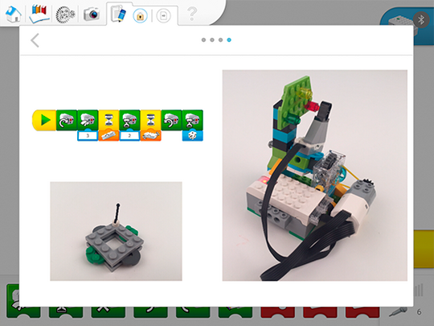

Das Dokumentationstool verwenden
Die Schülerinnen und Schüler sollten sich etwas Zeit dafür nehmen, die Informationen aufzuzeichnen, die sie im Projektverlauf zusammengetragen haben.
Je nachdem, welche Kompetenz(en) Sie fördern möchten, können Sie den Gruppen oder einzelnen Schülerinnen und Schülern die folgenden Aufgaben geben:
-
Die Lösungsstrategie skizzieren (Zerlegung)
-
Ein Video davon aufnehmen, wie sie bei Warnmeldungen Objekte an einen anderen Ort bewegen (Evaluation)
-
Ein Video davon aufnehmen, wie sie die Funktionsweise ihres Warngeräts erklären (Abstraktion)
-
Einen Screenshot von ihrem Programm aufnehmen (Algorithmisches Denken)
-
Ihr Programm erklären (Algorithmisches Denken)
-
Bilder von einigen der Tests anfertigen, die sie durchgeführt haben, und diese erklären (Evaluation)
